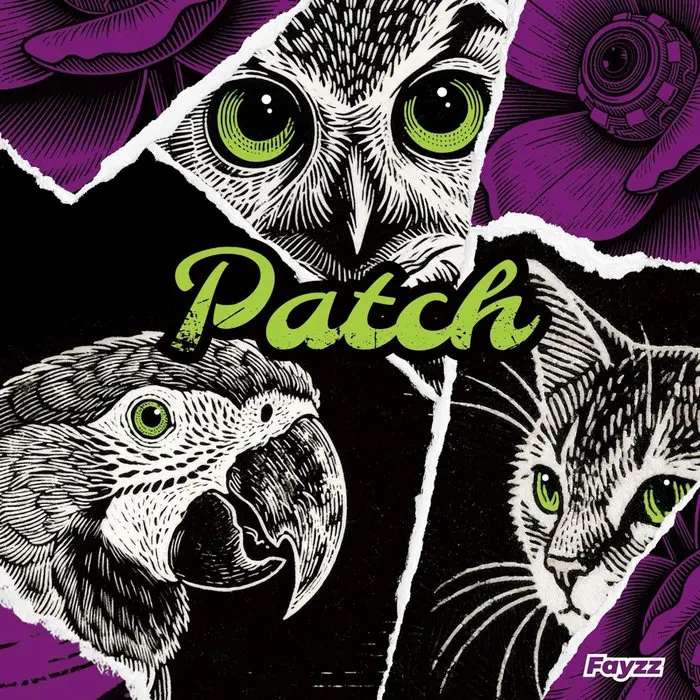

Album#33
Patch
{kind=link}

专辑信息
- 专辑名称：Patch
- 歌手：Fayzz
- 年份：2025-08-5
- 风格：数字摇滚
- 时长：46:17

一张还不错的数字摇滚(Math Rock)专辑，喜欢专辑里的鼓点，比较喜欢其中的「隐藏」、「Hollow」、「Forlorn Hope」、「浪人歌谣」、「Distance」、「美梦成空」、「Outro」。
专辑封面部分元素是 AI 生成的1，有三双动物的眼睛在注视着，右上角还有一个摄像头，有种被监视的感觉。封面有很多线条，旋转起来后还会产生 摩尔纹。
专辑简介
在我们的二十一世纪，人们鼓吹着技术奇点，鼓吹着智能，鼓吹着创新和突破。而在这美好的时代下，我们耳边或眼前的自媒体信息里，夹杂着却是广告和谣言 ⸺ 用预制食物装满身体，用图像软件拉长四肢，用灯光粉饰面容。消耗在互联网中，隐去自我，相互分享、发泄、对立，诋毁。我们将每一个判断和抉择都交给人工智能，然后遵循其给出的解答 ⸺ 让自己变得更像一副工具。
人们都妄图在这数字世界中找到独一无二的自己，但最后却被算法生得一般模样。我们躺在每天超过 600 亿则数字媒体的信息交织的网中，追逐自由，享受着我们的未来……
有时候明天是希望，但希望也许是陷阱。我们想用一些我们熟悉的音符来储存一份力量与你分享，像对抗补丁攻击一般，去瘫痪那双妄图格式化你的眼睛，而不应该被轻易的框选、识别和定义。我们应该用只属于自己的方式去织补未来和过去，保持清醒和专注。
「Patch」是 Fayzz 的第三张全长专辑，历时 7 个月完成在 2025 年夏天闷热的卧室之中。曲目动机来自 2017 年 ⸺ 2025 年，每一首歌曲最初的立意都是对未知的一些畅想和感悟。
专辑中「Hollow」这首歌的念白部分，源自于动画导演押井守，在其纪录片「赋妄想以有形」中接受采访时说过的一段话2，并重新做了录制和后期处理。
在这张专辑里我们也做了许多新的尝试：从音色、编排到风格，Fayzz 会一直在属于自己的节奏之中不断地尝试和自我更迭。希望每一位聆听专辑的你也能从中感受到那些编织在音符和节奏中的图景和意义，也希望通过这样一份礼物能修补你的迷茫，在漫长的明天中，找回本心。
专辑简介里提到了「对抗补丁攻击」，大概指的是一种针对深度学习视觉模型的对抗性攻击方法，通过在输入图像的特定区域添加精心设计的可见「补丁」（patch），来欺骗神经网络做出错误预测或分类，「Patch」这张专辑大概是包含一些反抗意味的。专辑里还用到了 Glitch（故障）效果，营造出一种混乱、破碎的感觉1。
数学摇滚听得不算多，最早听过的数字摇滚乐队是大象体操，toe 也听过一点。这类音乐的特点挺明显的，听过一些曲子后，很容易就能区分出来，尤其是其中的吉他的音色和鼓点的节奏。
虽然叫数学摇滚，数学不好也是可以听的。(>ᴗ•)
关于数学摇滚
数学摇滚的典型特征是其节奏的复杂性，听众和评论家认为这种复杂性具有数学特征。
虽然大多数摇滚乐使用 4/4 拍子（无论如何加重音或使用切分音），但数学摇滚则使用更多非标准、频繁变化的拍号，例如，在同一首乐曲使用 3/4 拍的鼓、4/4 拍的结他、3/4 拍的低音结他，却让每样乐器巧妙地于不同音轨上「对在一起」，听起来又顺畅不碍耳，而不按常规的编曲能让听众有种跳出预期的小惊喜。
与传统摇滚乐一样，其声音通常由吉他和鼓主导。然而，鼓在数学摇滚中扮演着更重要的角色，用以提供强劲且复杂的节奏。数学摇滚吉他手利用点弦技术和循环踏板来构建这些节奏。
歌词通常不是数学摇滚的重点；人声被视为混音中的另一种乐器。
数学摇滚（链接里列举了很多乐队）
脚注:
所谓日常
就是那种沉重的、潮湿的
让人窒息的感觉
温吞吞的
像被丝棉勒住脖子一样痛苦